Model
- Gain: stimulated emission exceeds absorption when the quasi-Fermi-level separation exceeds the photon energy (Kroemer 1963). Near transparency
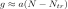
. - Threshold:
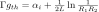
, with the fraction of the optical mode in the active layer (slab waveguide);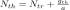
;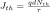
(active thickness ) (Hall et al. 1962). DH and QW structures reduce and
) (Hall et al. 1962). DH and QW structures reduce and  by orders of magnitude.
by orders of magnitude. - Threshold from the gain curve: compute
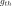
, read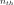
on the measured peak-gain vs carrier-density curve, then with radiative recombination at strong injection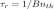
: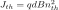
,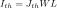
. InGaAsP at 1310 nm,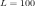
µm,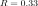
, cm
cm :
: 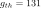
cm →  cm
cm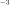
; with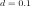
µm,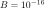
m³/s, µm:
µm: 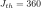
A/cm²,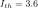
mA. - Mirrors from the spectrum: a measured mode width
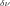
and the spacing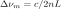
give , then
, then 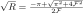
from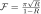
. Cleaved facets give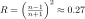
–0.33; lower values need AR coatings, higher ones dielectric stacks (Bragg mirrors). - L–I curve: slope
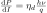
,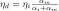
. - Temperature:
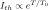
(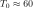
–150 K): TE coolers for telecom lasers.
Single-mode lasers
Fabry–Perot chips lase on several modes (spacing
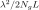
). DFB: a Bragg grating along the cavity selects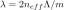
(quarter-wave shifted for a single mode). DBR: gratings outside the gain section (tunable). VCSEL: vertical cavity of ~1λ between Bragg mirrors, FSR so large that only one longitudinal mode fits; circular low-divergence beam, low threshold, wafer testing. External-cavity lasers: kHz linewidths.Dynamics and linewidth
Small-signal response has a relaxation-oscillation resonance
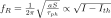
: the direct-modulation bandwidth (~10–30 GHz). Linewidth: Schawlow–Townes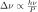
times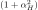
with the Henry factor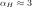
–5; the same coupling gives frequency chirp under modulation, which interacts with fibre dispersion.Worked example
InGaAsP FP laser,  µm,
µm,  ,
,
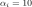
cm: mirror loss 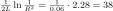
cm. 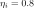
: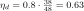
; at 1550 nm (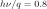
V) slope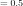
W/A. At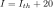
mA: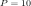
mW per facet pair, i.e. ≈ 5 mW per facet.Picture: light–current characteristic
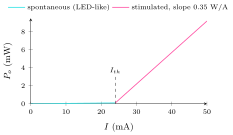
 , stimulated emission with a slope efficiency of 0.35 W/A above it.
, stimulated emission with a slope efficiency of 0.35 W/A above it.Below threshold the spectrum is broad (tens of nm), above it collapses onto a few cavity modes and the slope jumps by orders of magnitude.
Engineering applications
Telecom transmitters (DFB at 1310/1550 nm, EML), datacom VCSELs at 850 nm, pump lasers at 980 nm for EDFAs, LiDAR, barcode and optical storage, high-power diode bars for pumping and materials processing.
Exam-style exercise
A GaAs DH laser (860 nm) has  µm,
µm,
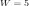
µm,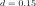
µm, ,
, 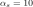
cm, 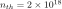
cm, m³/s. (a) , . (b) ,, . (c) Photon lifetime and slope efficiency . (d) Output at 36 mA.
Solution
(a) ; cm. (b) ns; A/m² (1.9 kA/cm²); mA. (c) ps; slope W/A. (d) mW.
Pitfall
Both facets emit: the slope efficiency per facet is half of for a symmetric cavity unless one facet is HR-coated.